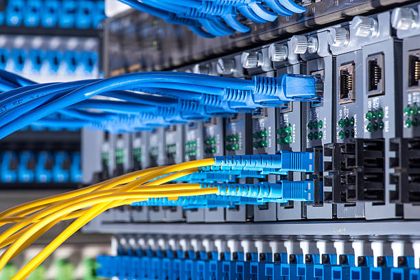
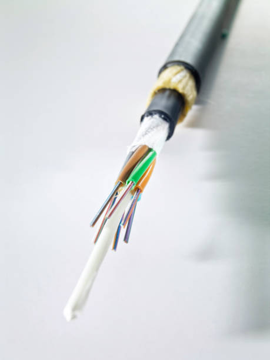
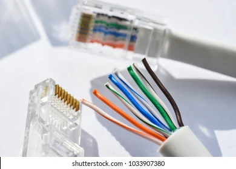
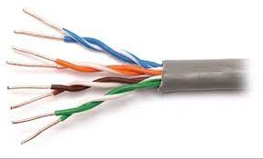
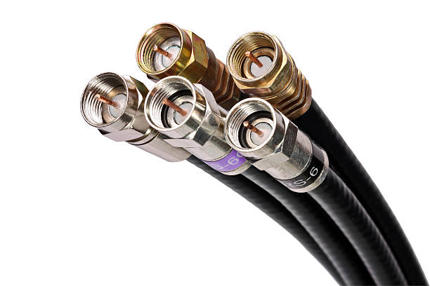
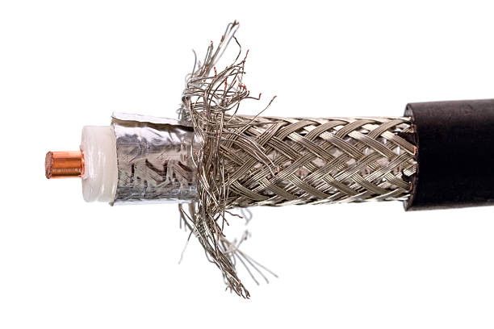

Web Page Design & Computer Peripherals
Networking Cables

Networking cables are networking hardware used to connect one network device to other network devices or to connect two or more computers to share printers, scanners etc. Different types of network cables, such as coaxial cable, optical fiber cable, and twisted pair cables, are used depending on the network's physical layer, topology, and size. The devices can be separated by a few meters (e.g. via Ethernet) or nearly unlimited distances (e.g. via the interconnections of the Internet).
There are several technologies used for network connections. Patch cables are used for short distances in offices and wiring closets. Electrical connections using twisted pair or coaxial cable are used within a building. Optical fiber cable is used for long distances or for applications requiring high bandwidth or electrical isolation. Many installations use structured cabling practices to improve reliability and maintainability. In some home and industrial applications power lines are used as network cabling.
Types Of Networking Cables:
- Fiber Optics cable
- Twisted Pair cable
- Coaxial cable
1.Fiber Optics cable:
A fiber-optic cable, also known as an optical-fiber cable, is an assembly similar to an
electrical cable, but containing one or more optical fibers that are used to carry light. The optical fiber elements are typically
individually coated with plastic layers and contained in a protective tube suitable for the environment where the cable is used.
Different types of cable are used for different applications, for example, long distance telecommunication, or providing a high-speed
data connection between different parts of a building.
DESIGN: Optical fiber consists of a core and a cladding layer, selected for total internal reflection due to the difference in the refractive index between the two. In practical fibers, the cladding is usually coated with a layer of acrylate polymer or polyimide. This coating protects the fiber from damage but does not contribute to its optical waveguide properties. Individual coated fibers (or fibers formed into ribbons or bundles) then have a tough resin buffer layer or core tube(s) extruded around them to form the cable core. Several layers of protective sheathing, depending on the application, are added to form the cable. Rigid fiber assemblies sometimes put light-absorbing ("dark") glass between the fibers, to prevent light that leaks out of one fiber from entering another. This reduces crosstalk between the fibers, or reduces flare in fiber bundle imaging applications
JACKET:The jacket material is application-specific. The material determines the mechanical robustness, chemical and UV radiation resistance, and so on. Some common jacket materials are LSZH, polyvinyl chloride, polyethylene, polyurethane, polybutylene terephthalate, and polyamide.
FIBER MATERIAL:There are two main types of material used for optical fibers: glass and plastic. They offer widely different characteristics and find uses in very different applications. Generally, plastic fiber is used for very short-range and consumer applications, whereas glass fiber is used for short/medium-range (multi-mode) and long-range (single-mode) telecommunications.

2.Twisted Cable:
Twisted pair cabling is a type of wiring in which two conductors of a single circuit are twisted
together for the purposes of improving electromagnetic compatibility. Compared to a single conductor or an untwisted balanced pair,
a twisted pair reduces electromagnetic radiation from the pair and crosstalk between neighboring pairs and improves rejection of
external electromagnetic interference. It was invented by Alexander Graham Bell.
A twisted pair can be used as a balanced line, which as part of a balanced circuit can greatly reduce the effect of noise currents induced on the line by coupling of electric or magnetic fields. The idea is that the currents induced in each of the two wires are very nearly equal. The twisting ensures that the two wires are on average the same distance from the interfering source and are affected equally. The noise thus produces a common-mode signal which can be cancelled at the receiver by detecting the difference signal only, the latter being the wanted signal.

Common-mode rejection starts to fail on untwisted wires when the noise source is close to the signal wires; the closer wire will couple with the noise more strongly and the receiver will be unable to eliminate it. This problem is especially apparent in telecommunication cables where pairs in the same cable lie next to each other for many miles. Twisting the pairs counters this effect as on each half twist the wire nearest to the noise-source is exchanged. Provided the interfering source remains uniform, or nearly so, over the distance of a single twist, the induced noise will remain common-mode. The twist rate (also called pitch of the twist, usually defined in twists per metre) makes up part of the specification for a given type of cable. When nearby pairs have equal twist rates, the same conductors of the different pairs may repeatedly lie next to each other, partially undoing the benefits of twisting. For this reason it is commonly specified that, at least for cables containing small numbers of pairs, the twist rates must differ.[2] In contrast to shielded or foiled twisted pair (typically S/FTP or F/UTP cable shielding), UTP cable is not surrounded by any shielding. UTP is the primary wire type for telephone usage and is very common for computer networking.

3.COAXIAL CABLE:Coaxial cable, or coax (pronounced /ˈkoʊ.æks/) is a type of electrical cable consisting of an inner conductor surrounded by a concentric conducting shield, with the two separated by a dielectric (insulating material); many coaxial cables also have a protective outer sheath or jacket. The term coaxial refers to the inner conductor and the outer shield sharing a geometric axis. Coaxial cable is a type of transmission line, used to carry high-frequency electrical signals with low losses. It is used in such applications as telephone trunk lines, broadband internet networking cables, high-speed computer data busses, cable television signals, and connecting radio transmitters and receivers to their antennas. It differs from other shielded cables because the dimensions of the cable and connectors are controlled to give a precise, constant conductor spacing, which is needed for it to function efficiently as a transmission line. In his 1880 British patent, Oliver Heaviside showed how coaxial cable could eliminate signal interference between parallel cables. Coaxial cable was used in the first (1858) and following transatlantic cable installations, but its theory was not described until 1880 by English physicist, engineer, and mathematician Oliver Heaviside, who patented the design in that year (British patent No. 1,407).

DESCRIPTION: Coaxial cable conducts electrical signal using an inner conductor (usually a solid copper, stranded copper or copper plated steel wire) surrounded by an insulating layer and all enclosed by a shield, typically one to four layers of woven metallic braid and metallic tape. The cable is protected by an outer insulating jacket. Normally, the outside of the shield is kept at ground potential and a signal carrying voltage is applied to the center conductor. The advantage of coaxial design is that with differential mode, equal push-pull currents on the inner conductor, and inside of the outer conductor, the signal's electric and magnetic fields are restricted to the dielectric, with little leakage outside the shield. Further, electric and magnetic fields outside the cable are largely kept from interfering with signals inside the cable, if unequal currents are filtered out at the receiving end of the line. This property makes coaxial cable a good choice both for carrying weak signals, that cannot tolerate interference from the environment, and for stronger electrical signals, that must not be allowed to radiate or couple into adjacent structures or circuits. Larger diameter cables and cables with multiple shields have less leakage. Common applications of coaxial cable include video and CATV distribution, RF and microwave transmission, and computer and instrumentation data connections.